CATCHING ELECTRONS IN THE ACT:
SPEEDING UP SIMULATIONS FOR ULTRAFAST PHYSICS
A Computationally Efficient Alternative to Ab Initio Methods
Khang Luong and Martin Centurion
Department of Physics and Astronomy • University of Nebraska-Lincoln
Introduction
Ultrafast Molecular Dynamics
Observing fundamental processes involves energy transfers at the atomic level, occurring on the femtosecond (10-15 s) timescale:
- Photosynthesis: Bond formation and breaking.
- Solar conversion: Charge separation and transfer.
- DNA photoprotection: Ultrafast relaxation in nucleobases.
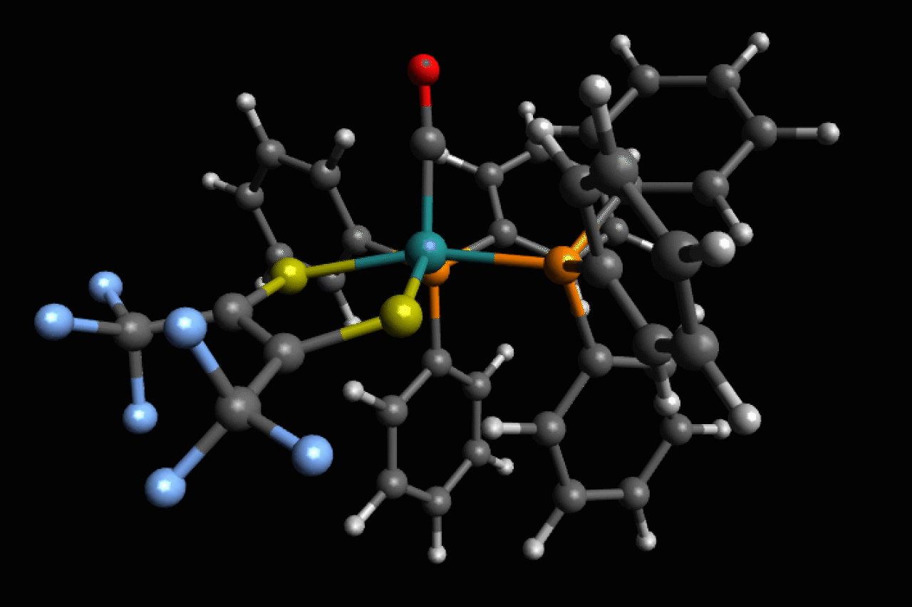
Making "Molecular Movies"
- Understanding these mechanisms requires direct observation of atomic motions and electronic rearrangements.
- Ultrafast spectroscopy provides indirect signatures, but direct structural tracking is the ultimate goal.
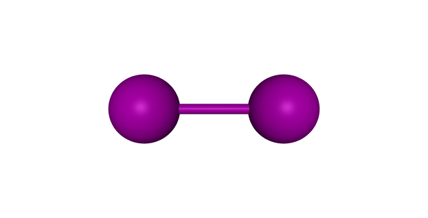
GUED Diffraction Pattern
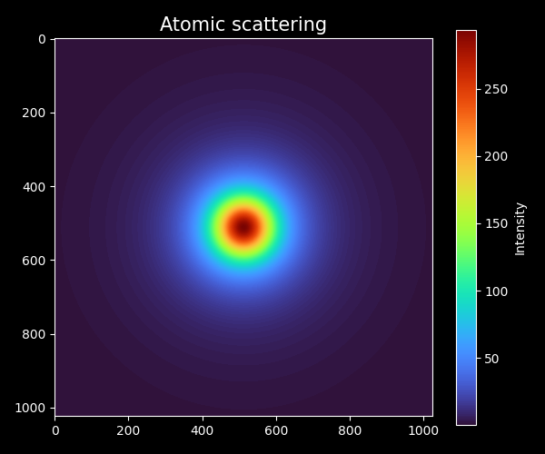
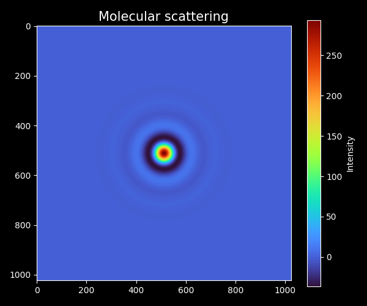
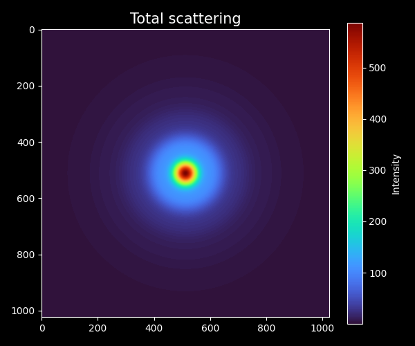
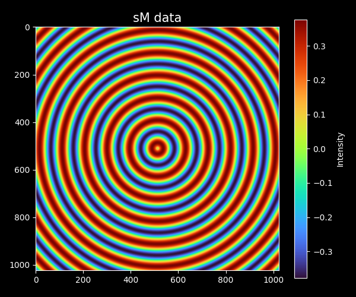
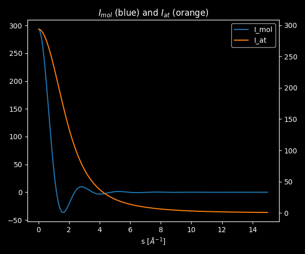
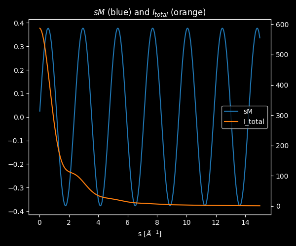
Analysis of Diffraction Pattern
The Independent Atom Model (IAM)
- Simplest and most efficient approach to model molecular diffraction patterns.
- Assumes total scattering is a sum of independent atomic contributions.
- Allows for tabulated Atomic Form Factor (AFF) for neutral atoms.
Total Intensity \[I_{\text{tot}}(s)=I_{\text{at}}(s)+I_{\text{mol}}(s)\]
Retrieval of Structure Information
- Ground state structure is known → Use IAM to predict diffraction pattern for a given geometry.
- A Fourier sine transform of the modified molecular intensity $sM(s)$ yields the Pair Distribution Function (PDF).
- PDF encodes interatomic distances, enabling 3D structural reconstruction.
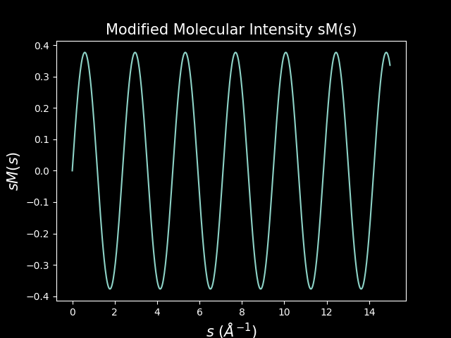
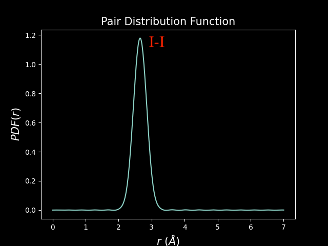
Time-Resolved Dynamics
- A time resolved diffraction signal can also be perform to analyze the structural changes during a photochemical reaction, such as bond breaking and formation.
- From there, we can track the structural evolution of the molecule in real time, creating a "molecular movie" of the reaction dynamics.
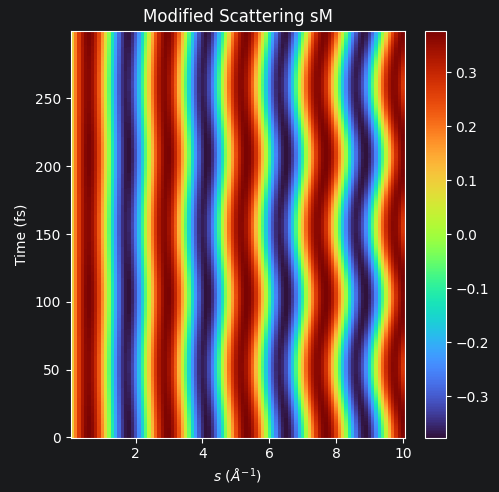
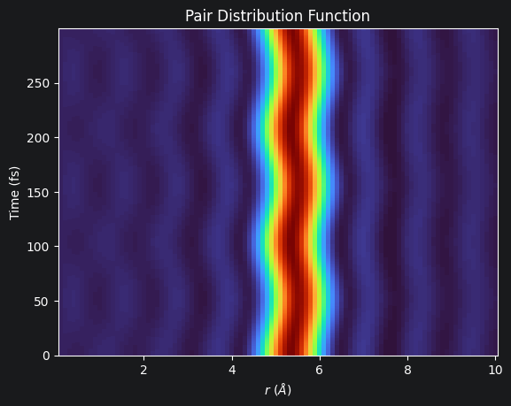
*Molecular dynamics simulated using Restricted Kohn–Sham over 300 fs.
The Computational Bottleneck
Where the Standard Fails
The Computational Bottleneck
The IAM Blind Spot
- Standard IAM assumes atoms are neutral and non-interacting.
- Fundamentally fails to capture electronic reorganization and charge localization during ionization.
Quantum Mechanical Reality
- Rigorous ab initio (first-principles) treatments can accurately resolve ionization and its impact on diffraction patterns.
- However:
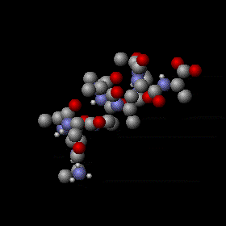
Our Solution: The IAM+
A Computationally Efficient Alternative
Our Solution: The IAM+
The "Software Update"
- Instead of running a highly expensive quantum simulation from scratch, we upgraded the existing independent atom model.
- We factor in a bare nucleus to explicitly account for the specific electron that was removed by the pump.
The Impact
- Successfully captures the signature of ionization and its impact on diffraction patterns.
- Maintains the computational speed of the original model, completely bypassing the bottleneck.
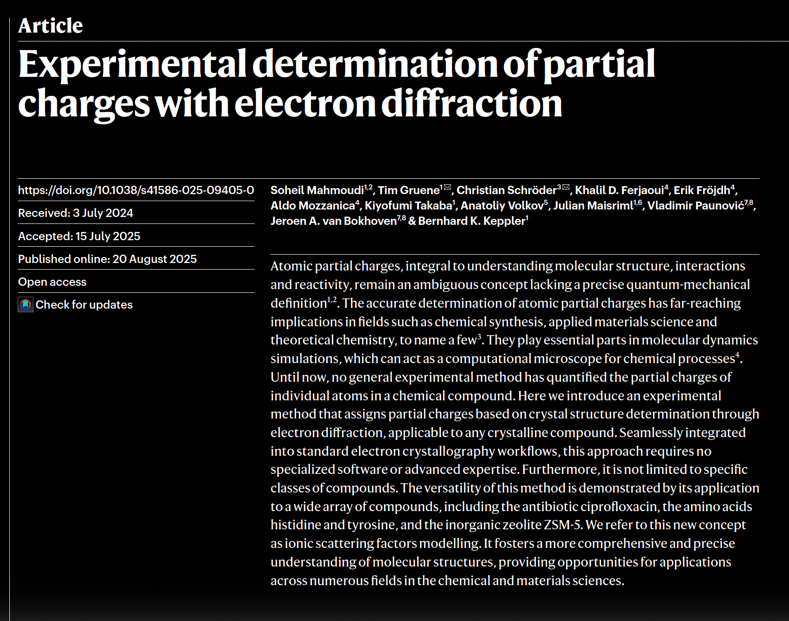
Results
Benchmarking against Ab Initio
Validation in Momentum Space
Test Case: HOMO-ionized Bromoacetylene ($\text{BrC}_2\text{H}$)
IAM+ (blue) successfully captures the ionization signature, while standard IAM (red) exhibits large errors in low momentum transfer.
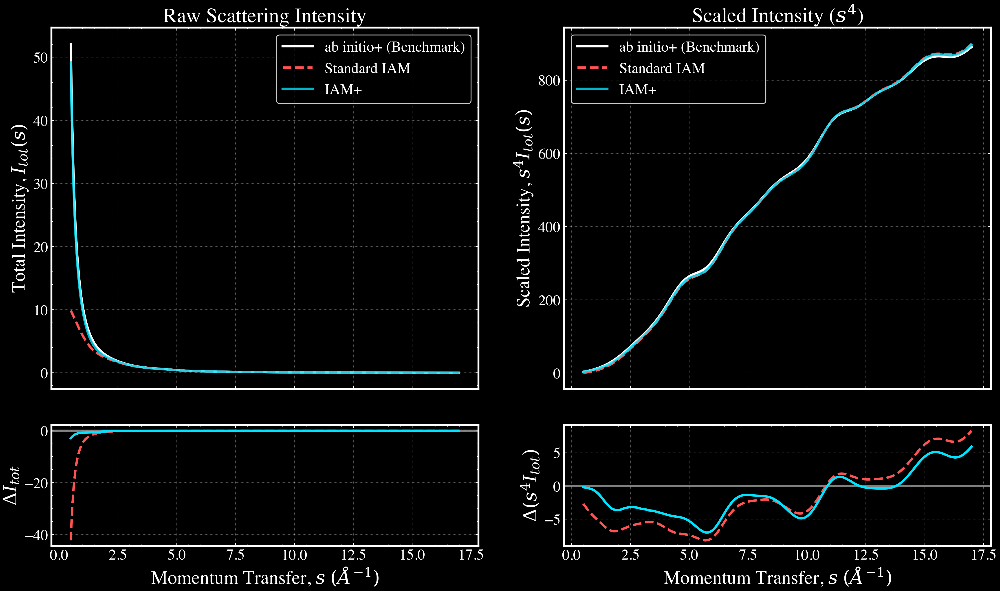
Computational Speed Comparison
Ab Initio
Requires 9GB RAM
IAM+
Requires 1GB RAM
Ongoing: Real-Space Charge Mapping
Topological differences between core (Br 1s) and valence (HOMO) holes.
- We expect the IAM+ can accurately capture ionized signatures from different charge sites in the molecule. Equivalent to the rigorous ab initio approach but with significantly reduced computational cost.
- To validate our approach, we are currently comparing the difference between a core and a valence hole on Bromoacetylene (BrC2H).
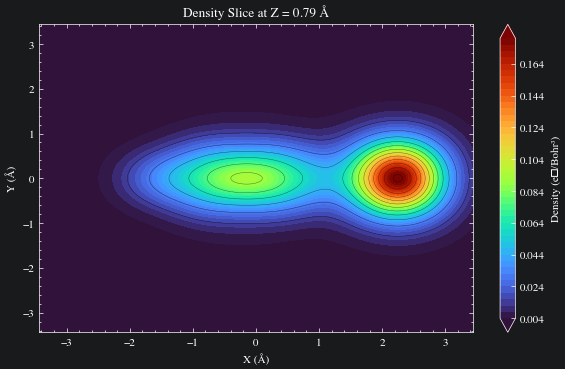
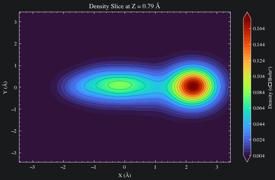
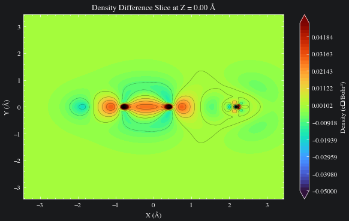
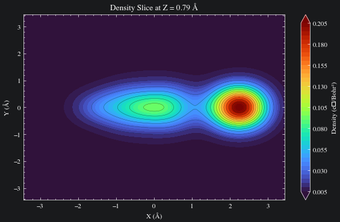
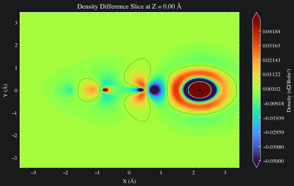
*Electron density calculated with Unrestricted Hartree-Fock (UHF), basis set def2-svpd.
Conclusion & Next Steps
Significance
- The IAM+ successfully captures the diffraction signatures of ionized molecules.
- Achieves quantum-level accuracy at a fraction of the computational cost of full quantum mechanical treatments.
Future Outlook
- Correlate ab initio density maps with IAM+ real-space simulations.
- Establish target molecule workflows to process experimental GUED data faster.
Acknowledgments
Centurion Research Group
Dr. Martin Centurion
Principal Investigator
Dr. Yanwei Xiong
Postdoctoral Scholar
Dr. Lauren Heald
Postdoctoral Scholar
Dr. Haoran Zhao
Graduate Student
Jackson Lederer
Graduate Student
Cuong Le
Graduate Student
Nikhil Pachisia
Graduate Student
Collaborators
Kirrander Theory Group, University of Oxford
SLAC MeV UED Team, SLAC National Accelerator Laboratory
Stanford Pulse Institute, Stanford University
Funding
This work is supported by the University of Nebraska-Lincoln Undergraduate Creative Activities and Research Experience (UCARE) program (application #56031) and by the US Department of Energy, Office of Science, Basic Sciences under award no. DE-SC0014170.